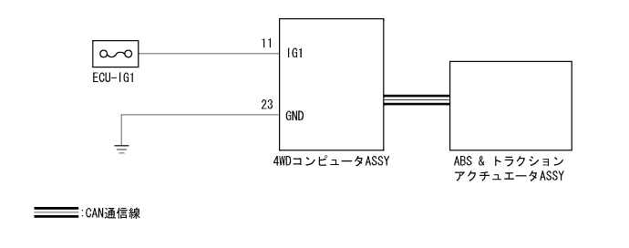
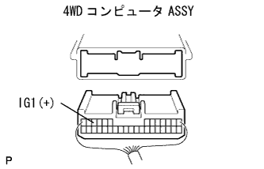
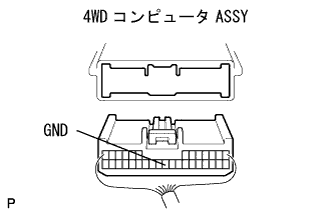

DTC C1241/94 Low Power Source Voltage Malfunction |
| DTC No. | DTC Detection Condition | Inspection Area |
|---|---|---|
| C1241/94 |
|
|

| Step 1 | Read DTC |
Connect SST (TaSCAN) to DLC3.
Turn the ignition switch ON and, following the SST (TaSCAN) screen display, read the DTCs of the ABS with EBD & TRC & VSC & BA system.
for reference.Check if any speed sensor malfunction codes (C0200/31, C0205/32, C0210/33, C0215/34, C1235/35, C1236/36, C1238/38, C1239/39) of the ABS with EBD & TRC & VSC & BA system are output in addition to DTC C1241/94.
| Result | Proceed to |
|---|---|
| Speed sensor malfunction codes are not output | A |
| Speed sensor malfunction codes are output | B |
|
| ||||
| A | |
| Step 2 | Inspect Battery |
Turn IG OFF.
Using SST (Toyota electrical tester), inspect the battery voltage.
|
| ||||
| OK | |
| Step 3 | Inspect Fuse (ECU-IG1) |
Using SST (Toyota electrical tester), inspect the resistance of the ECU-IG1 fuse.
|
| ||||
| OK | |
| Step 4 | Inspect Wire Harness and Connector (Power Source Circuit) |
for reference. |
Disconnect the 4WD computer assembly connector.
Using SST (Toyota electrical tester), measure the voltage between the vehicle side connector terminal of the 4WD computer assembly and body ground. (For Terminals of ECU, see)
| Tester Connection | Condition | Standard |
|---|---|---|
| 11 (IG1) - Body ground | IG ON | 11 to 14V |
|
| ||||
| OK | |
| Step 5 | Inspect Wire Harness and Connector (Ground Circuit) |
 |
for reference.Turn IG OFF.
Using SST (Toyota electrical tester), measure the resistance between the wire harness side connector terminal of the 4WD computer assembly and body ground. (For Terminals of ECU, see)
| Tester Connection | Condition | Standard |
|---|---|---|
| 23 (GND) - Body ground | Always | Below 1 Ω |
|
| ||||
| OK | ||
| ||